¿Qué hacer?
Barcelona es una ciudad llena de originales opciones de ocio que animan a visitarla una y otra vez. Abierta al mar Mediterráneo y afamada por Gaudí y su arquitectura modernista, Barcelona se revela como una de las capitales europeas más trendy.
La ciudad es un foco de nuevas tendencias en el mundo de la cultura, la moda y la gastronomía. Combina la creatividad de sus artistas y diseñadores con el respeto y cuidado por los locales tradicionales de siempre. En ella, conviven el encanto y la pausa de su casco histórico, la vanguardia de sus barrios más modernos y el ritmo urbanita de una de las ciudades más visitadas del mundo.
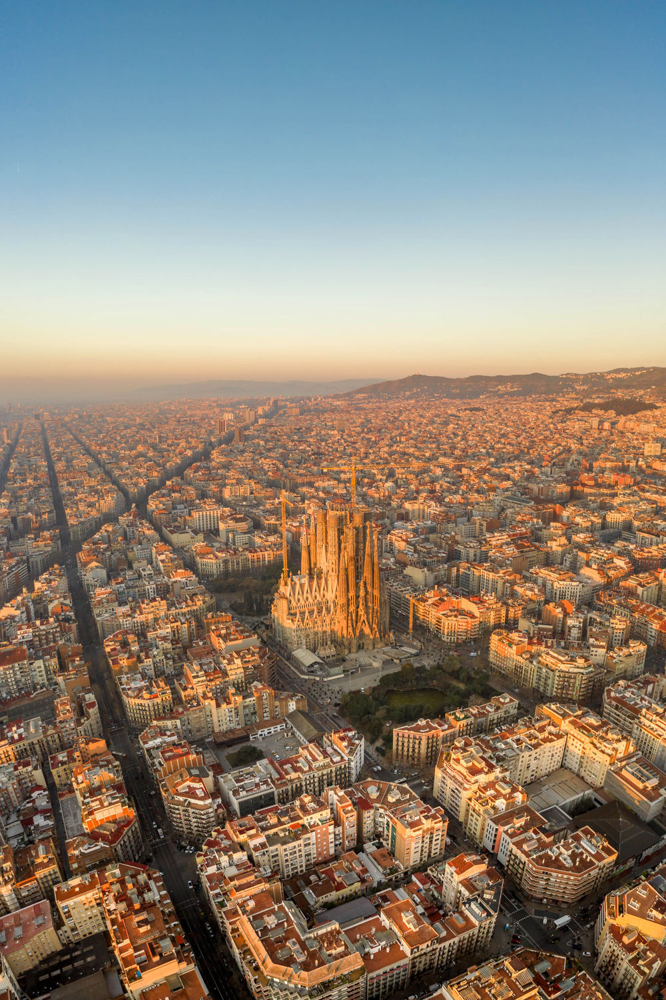
Destino para estar a la moda
Barcelona es un escaparate a las últimas novedades en moda. Pasear por sus calles es descubrir un mundo de posibilidades para una jornada de shopping. Desde zonas llenas de glamour y grandes firmas con tiendas icónicas en edificios emblemáticos, como por el paseo de Gracia o la avenida Diagonal, hasta diseños alternativos e innovadores en zonas como el barrio del Born. Además, en Barcelona abundan los comercios tradicionales y tendrás la oportunidad de visitar tiendas centenarias y ateliers que sorprenden por su atención al detalle.
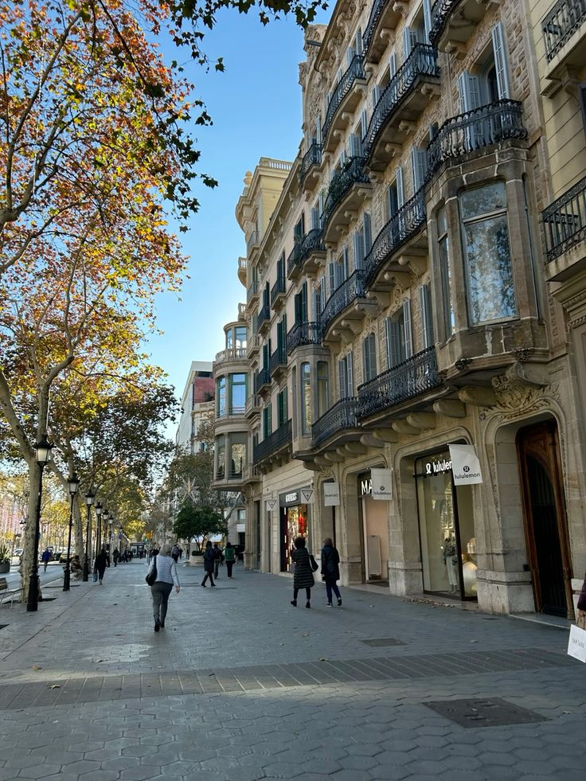
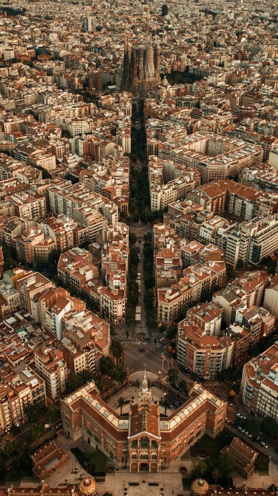
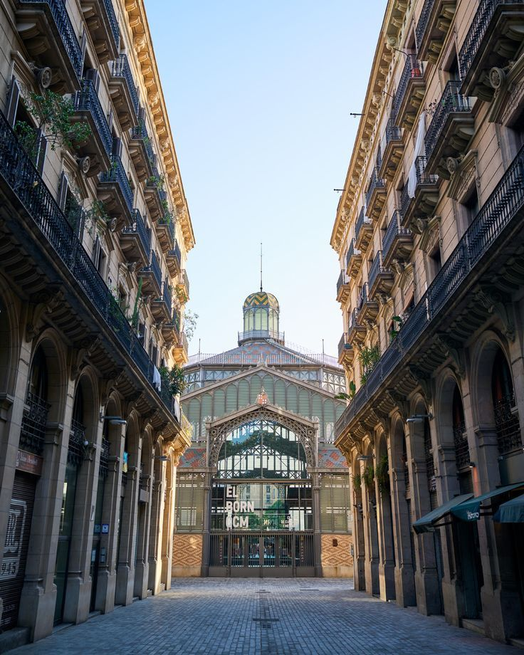
El carácter mediterráneo y las calles llenas de ambiente también marcan tendencia en Barcelona. Las posibilidades son casi infinitas y van desde visitas populares, como un paseo por Las Ramblas o los mercados tradicionales como la Boquería, hasta relajantes pausas en las playas urbanas o en las múltiples terrazas del casco histórico. Incluso, podrás conocer la ciudad de un modo original con el programa de visitas de Turismo de Barcelona. Sus propuestas incluyen rutas guiadas y temáticas, recorridos en coche de época, segway o bicicleta, salidas al mar en velero o vuelos en helicóptero.
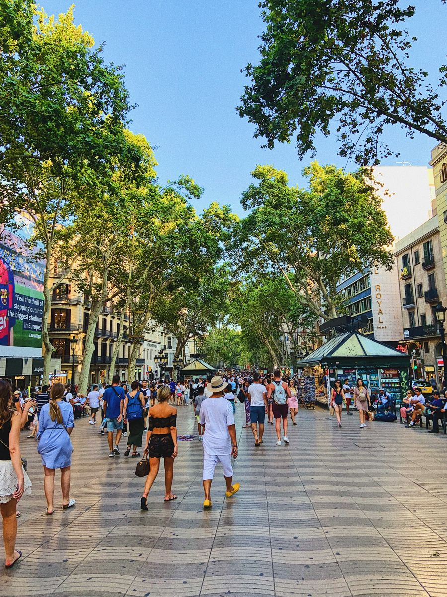
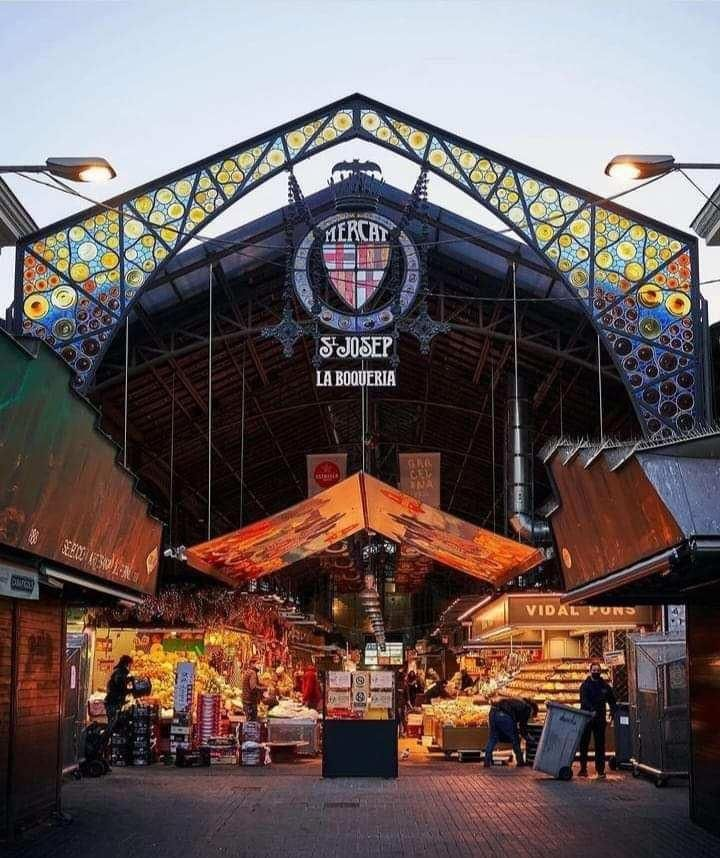
Ciudad para volver a visitar
Barcelona atrae por sus monumentos imprescindibles como la Sagrada Familia, el Park Güell, la Casa Batlló o la Pedrera (Casa Milà) Pero quienes la visitan descubren una ciudad que siempre guarda agradables sorpresas para cada viaje.
Los paseos junto al mar, las noches en las azoteas con vistas al skyline de la ciudad, amplios espacios verdes como el Parc de Montjuïc o Ciutadella, el puerto deportivo, el Barcelona olímpico o todo cuanto rodea al FC Barcelona son posibilidades para vivir nuevas experiencias en cada visita.
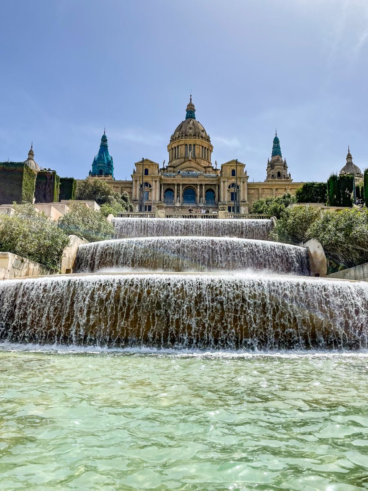
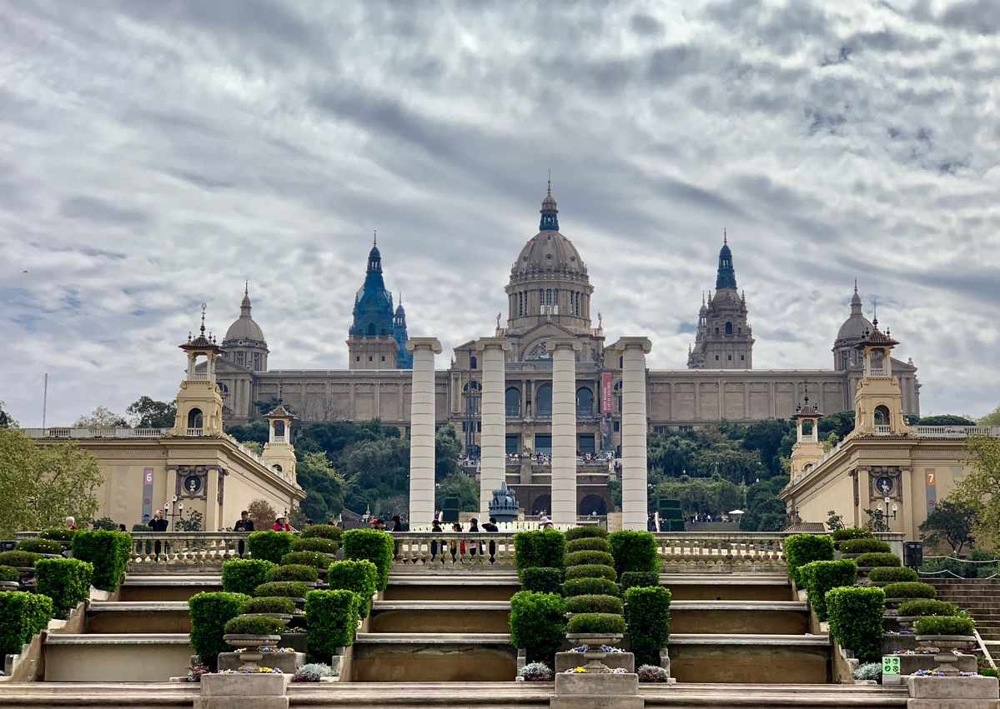
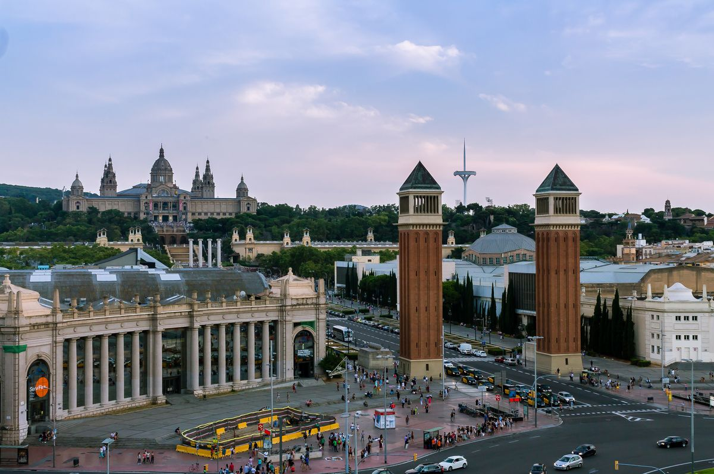
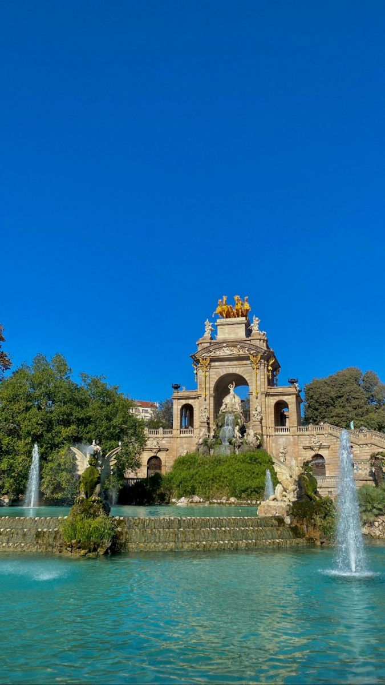
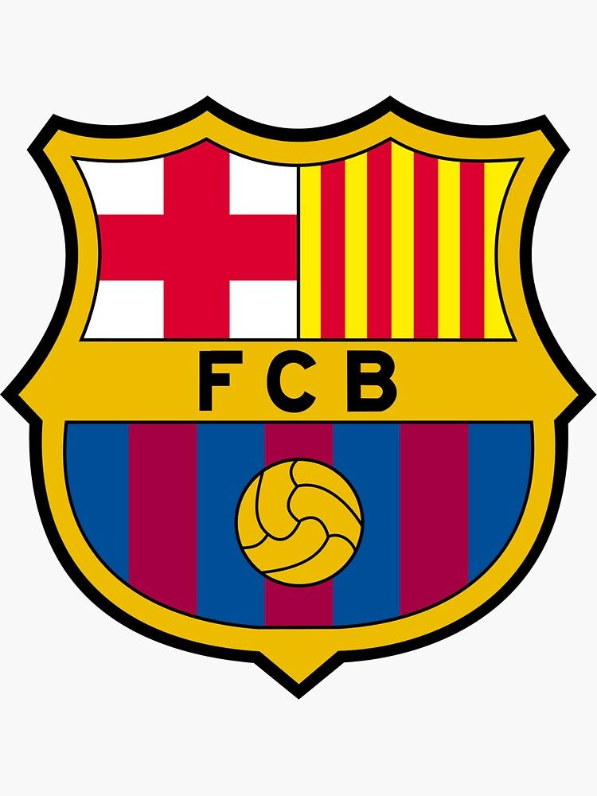
La oferta gastronómica también es muy variada y combina restaurantes de alta cocina reconocidos a nivel mundial, tradicionales casas de comida catalana, mercados gastronómicos, locales para recorrer el mundo a través de los sabores... Por su parte, la agenda cultural incluye importantes centros de arte, como el Museu Picasso, el Museu Nacional d'Art de Cataluña o CaixaForum, una amplia gama de festivales y uno de los grandes templos de la ópera en España, el Gran Teatre del Liceu.
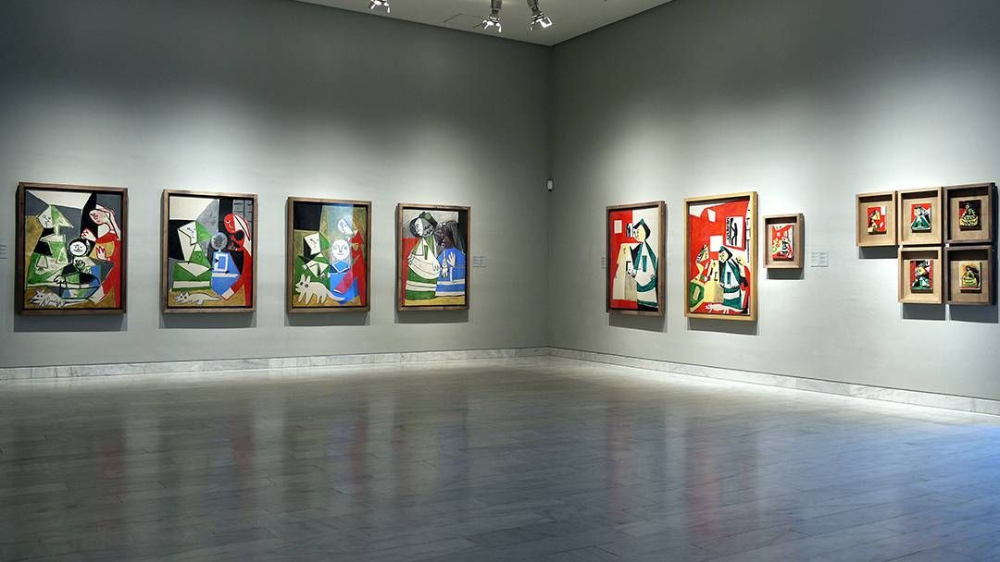
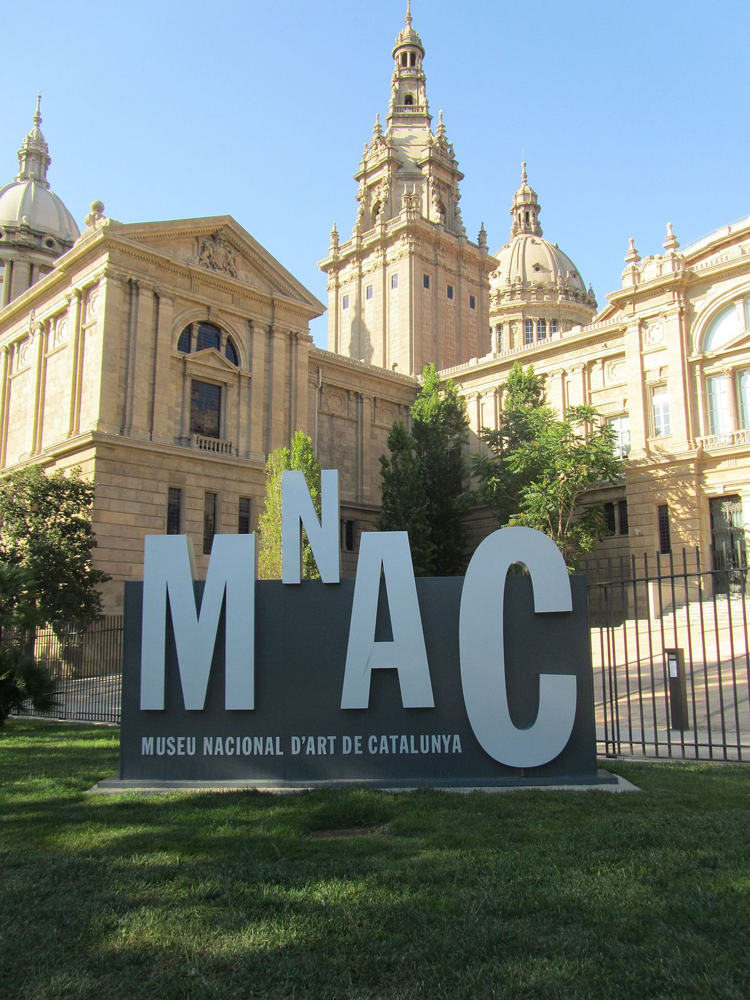
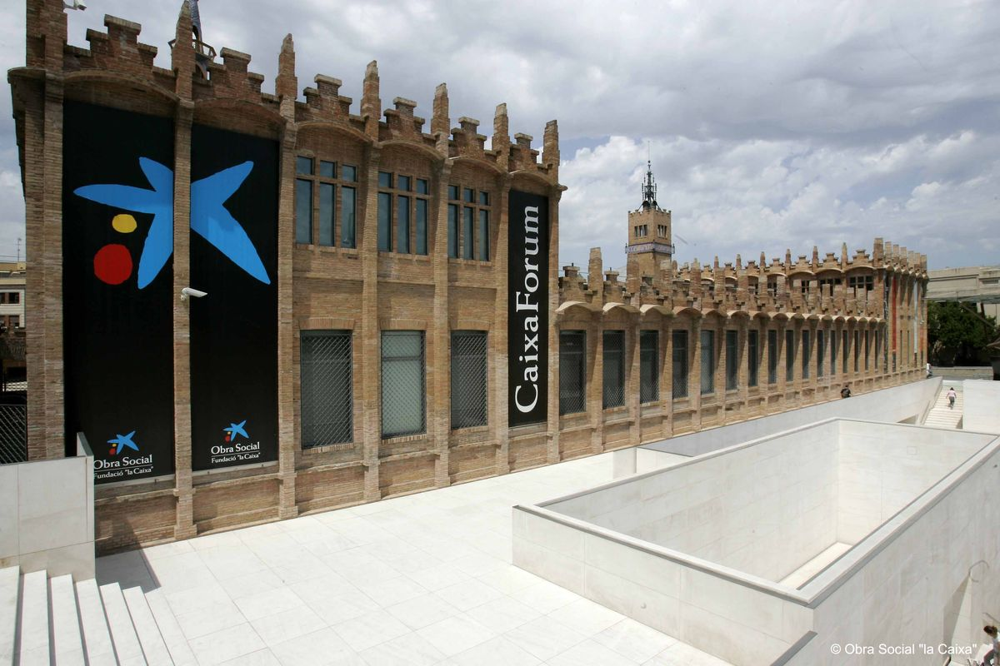
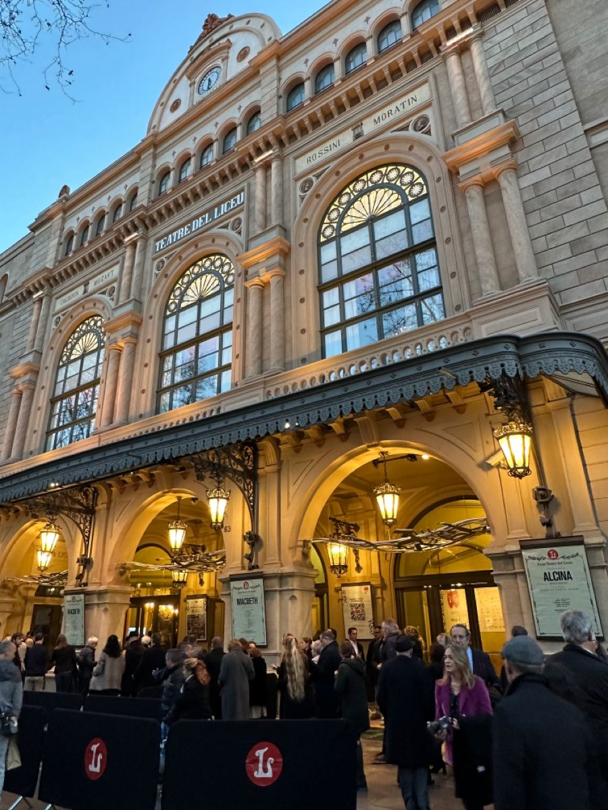